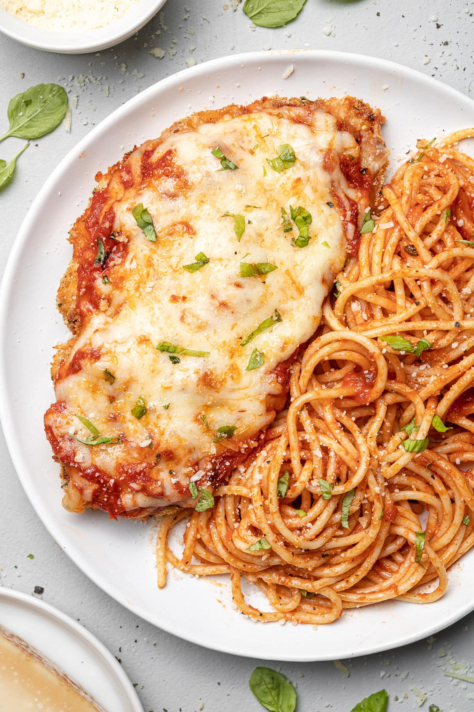

Chicken Parm
Home
Jason's Egg Sammy
Pulled Pork Sandwich

Chicken Parm is a classic meal that you can find in any Italian-American household. It is always a go-to comfort food for myself, and my recipe has made a
name for itself amongst my family members.
Ingredients
- chicken tenderloins
- salt
- pepper
- flour
- 1 egg
- panko bread crumbs
- olive oil
- fresh mozzarella
- fresh parmesan
- fresh basil
- marinara sauce
Directions
- Preheat oven to 500 degrees F (260 degrees C). Line a rimmed baking sheet with aluminum foil.
- Gently pound chicken breasts between 2 layers of plastic until each breast is evenly thick. Place breasts on a plate and season 1 side with kosher salt and black pepper. Sprinkle with flour; press flour to coat the entire surface and help it adhere. Turn and repeat on second side with salt, pepper, and flour.
- Brush excess flour from plate; place the chicken breasts back on the plate. Pour beaten egg over the breasts and coat each side. Cover bottom of a second plate with half the bread crumbs. Transfer chicken to the bread crumbs. Push crumbs up sides of chicken. Sprinkle on the remaining crumbs and thoroughly coat each side.
- Heat 1/2 inch olive oil in a skillet over medium-high heat. Cook chicken until crispy and golden, 2 to 3 minutes per side. Transfer to prepared baking sheet.
- Mix ricotta and Cheddar cheese together in a bowl. Stir in salt, black pepper, cayenne, and olive oil. Spread half the cheese mixture on each breast without extending all the way to the edges. Dust with Parmigiano-Reggiano cheese and drizzle with olive oil.
- Bake on center rack of preheated oven until cheese is melted and chicken is no longer pink in the center and the juices run clear, 10 to 12 minutes. An instant-read thermometer inserted into the center should read at least 165 degrees F (74 degrees C).
- To serve, ladle the heated marinara sauce in a wide circle on warm plates. Place chicken in center and sprinkle with chopped parsley.